Spolupracujem s lídrami na finančnom trhu
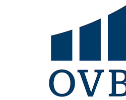
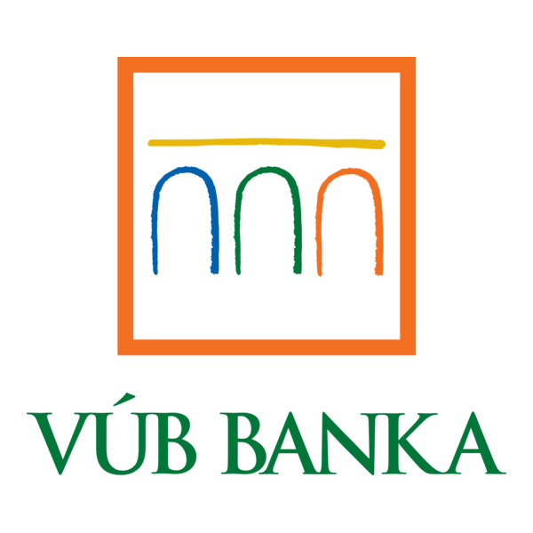
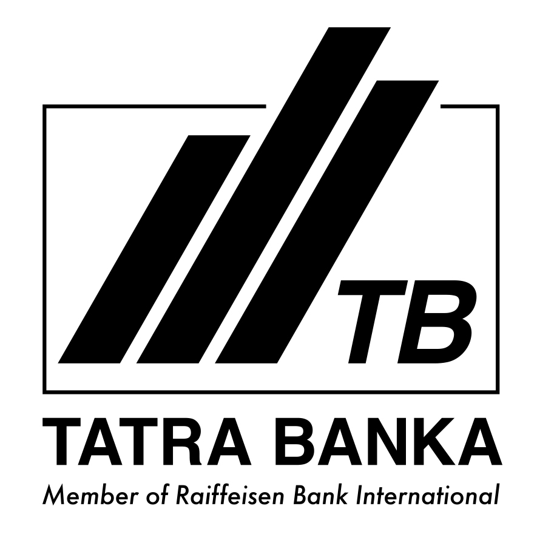
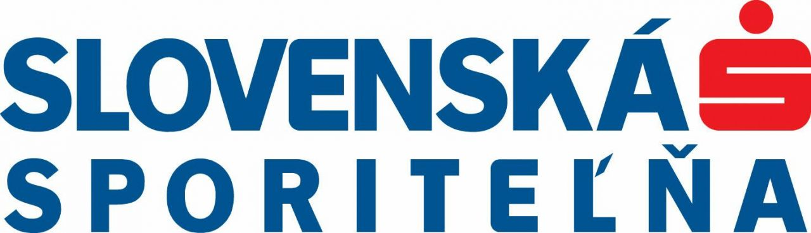
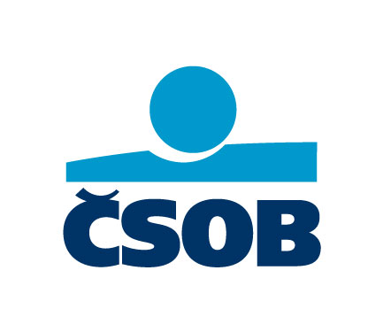

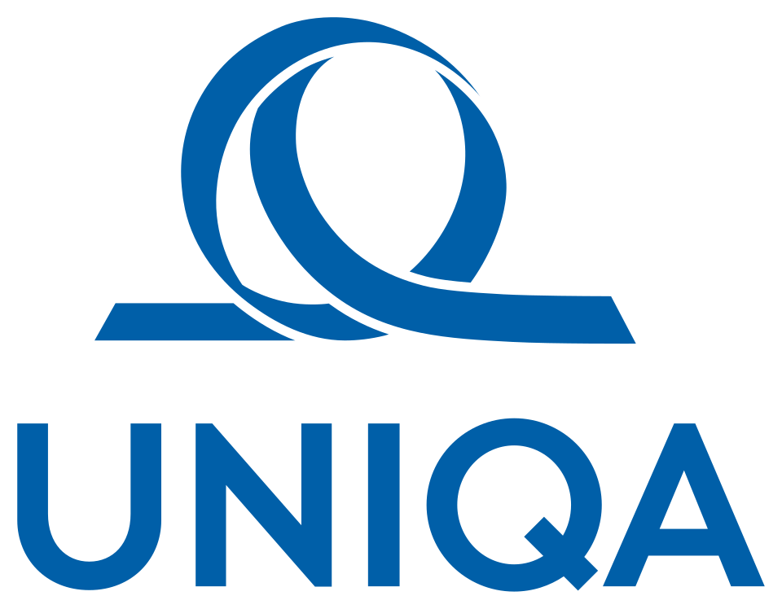
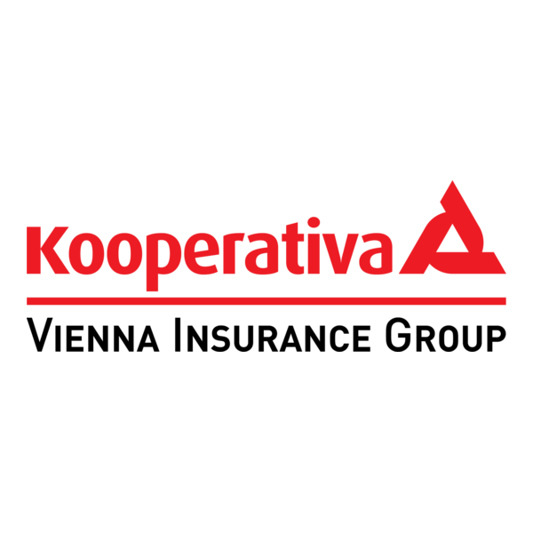
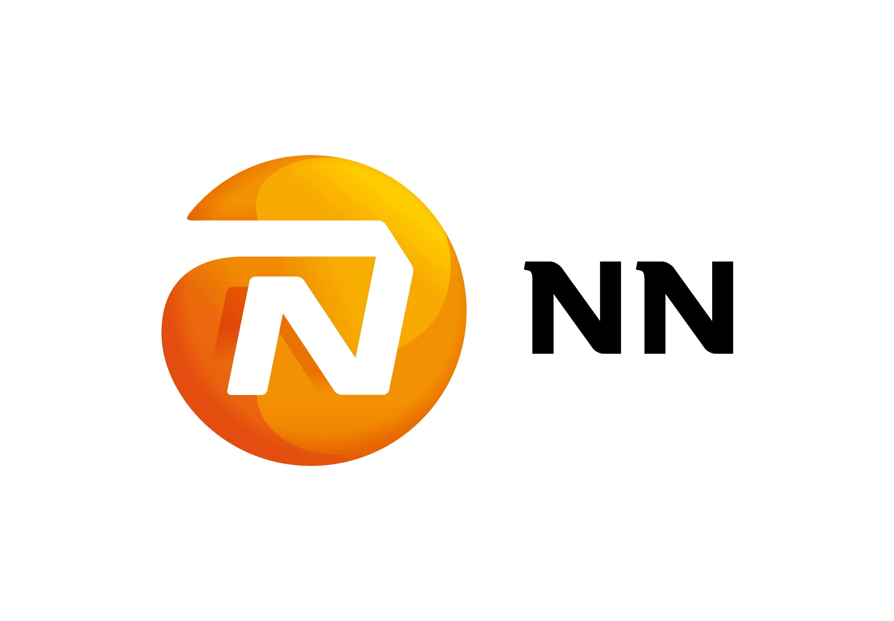
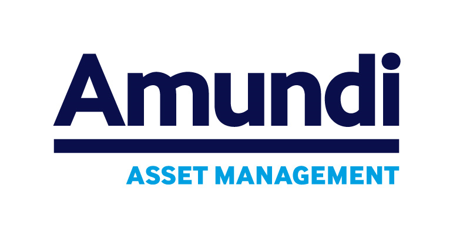
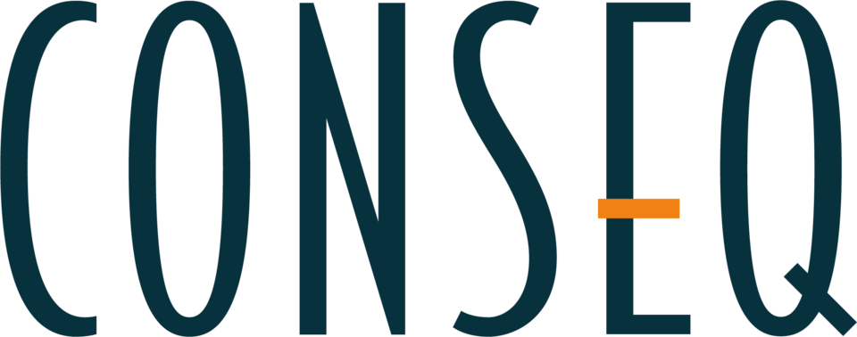

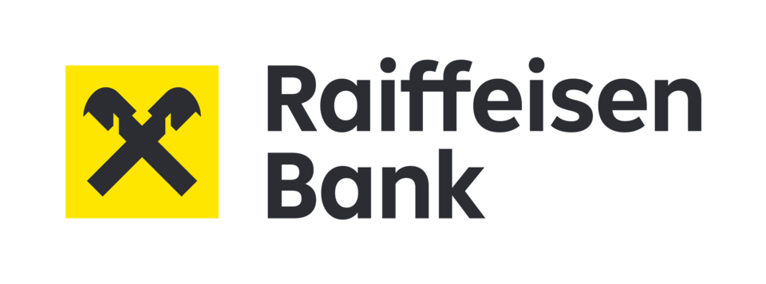
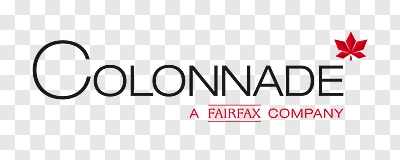
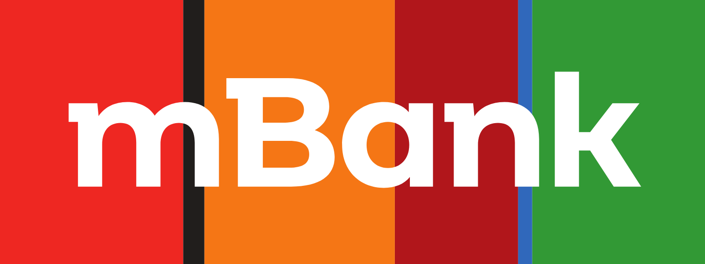
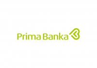
Odpovede na najčastejšie otázky o hypotékach, poistení, investovaní a spolupráci. Ak nenájdete odpoveď, môžete mi rovno napísať.
Chcem bezplatnú konzultáciuSpolupracujem s lídrami na finančnom trhu














Áno. Moja konzultácia, vypracovanie finančného plánu a následný servis sú pre vás bezplatné. Moju prácu hradia finančné inštitúcie formou provízie.
Rád vás privítam v kancelárii v Michalovciach (Obchodná 2). Celú agendu však vieme vyriešiť aj online cez videohovor.
Prvé stretnutie je o spoznávaní vašej situácie a cieľov. Na základe toho pripravím bezplatnú analýzu a návrh stratégie.
V rámci auditu skontrolujem ich nastavenie a poplatky. Ak sú dobré, potvrdím vám to. Ak nie, navrhnem efektívnejšie riešenie.
Ideálne ešte pred hľadaním bývania. Preveríme vašu bonitu, aby ste vedeli, s akým rozpočtom môžete počítať.
Áno. Sledujem trh a ak existuje možnosť ušetriť na splátke alebo úroku, vybavím celý proces za vás.
Áno, hoci sú banky prísnejšie. Viem, ktoré banky najlepšie akceptujú príjmy SZČO.
Schválenie hypotéky môže trvať niekoľko dní až týždňov podľa banky a pripravenosti dokumentov. Pomôžem vám pripraviť podklady tak, aby celý proces prebehol čo najrýchlejšie.
Refinancovanie sa oplatí najmä vtedy, keď viete získať nižší úrok, nižšiu splátku alebo výhodnejšie podmienky. Dôležité je porovnať celkové náklady a možnosti bánk.
Práve vtedy sa rodia najväčšie zisky. Dlhodobé investovanie spoľahlivo poráža infláciu a buduje váš majetok.
Diverzifikáciou riziko minimalizujeme. Peniaze máte pod dohľadom NBS u renomovaných svetových správcov.
Vtedy je najlacnejšie. Chráni váš príjem pred udalosťami, ktoré by mohli finančne ohroziť vás alebo vašu rodinu.
Vo všeobecnosti sa odporúča mať rezervu vo výške 3 až 6 mesačných výdavkov. Výška závisí od vašej situácie, príjmu a rodinných záväzkov.
Jednoznačne áno. Sú to vaše súkromné peniaze. Pomôžem vám vybrať indexový fond, aby úspory reálne rástli.
Oplatí sa najmä pri príspevku zamestnávateľa. Je to vlastne bonus k mzde s možnosťou daňovej úľavy.
Áno, moderné produkty sú flexibilné. Môžete meniť výšku vkladu alebo vybrať peniaze skôr, ak je to potrebné.
Väčšina ľudí bude musieť dôchodok dopĺňať vlastnými úsporami. Preto je dôležité začať riešiť rezervu a investovanie čo najskôr.
Áno. Dá sa zmeniť fond, nastavenie investovania aj dôchodková správcovská spoločnosť. Správne nastavenie vie výrazne ovplyvniť budúci dôchodok.
Čím skôr začnete, tým väčší efekt má čas a pravidelnosť. Aj menšie mesačné sumy môžu dieťaťu vytvoriť dobrý finančný základ do budúcnosti.
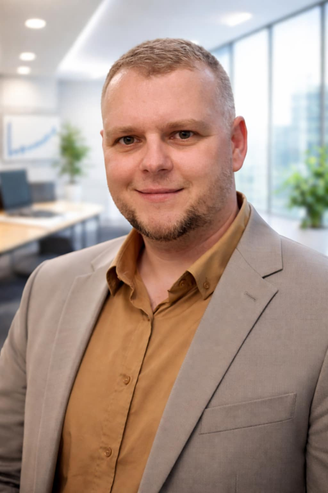
Moje poradenstvo je individuálne. Napíšte mi vašu otázku a ja vám navrhnem riešenie na mieru.